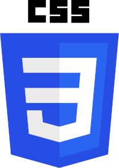

A Instituição Fundação Bradesco é benemerente com 40 escolas próprias e outras iniciativas de inclusão social
Para divulgar as especificações dos padrões web, o W3C Brasil oferece alguns cursos filiados brasileiros e parceiros interlocutores.

A escola virtual está à disposição dde alunos, ex-alunos, educadorese funcinários da Fundação Bradesco, além de pessoas da comunidade.
O "Portal Domínio Público", lançado em novembro de 2004, propõe o compartilhamento de conhecimentos de forma igualitária na internet.